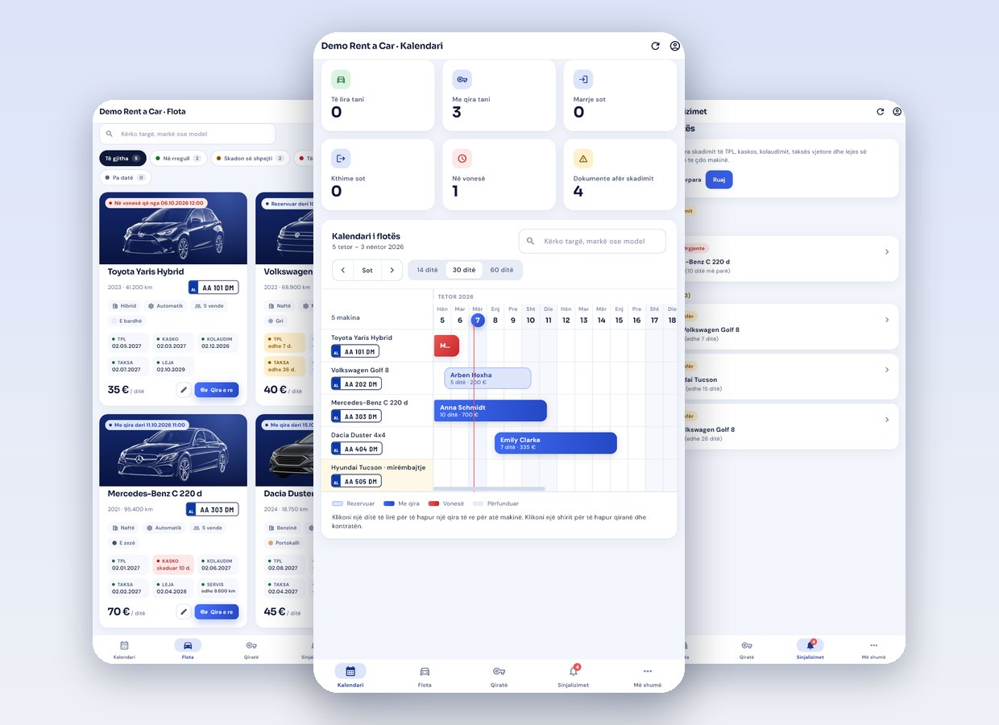
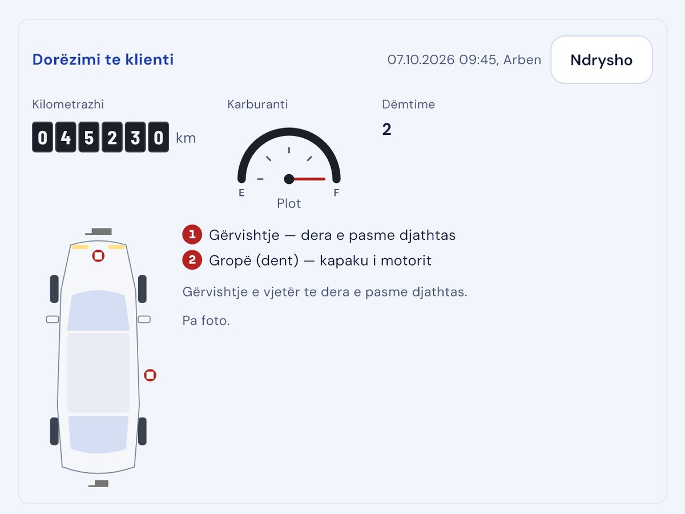
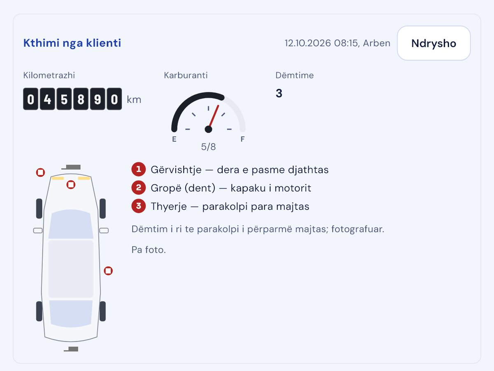
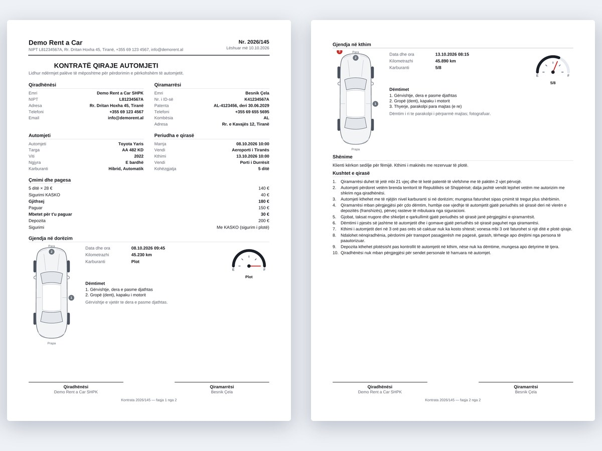
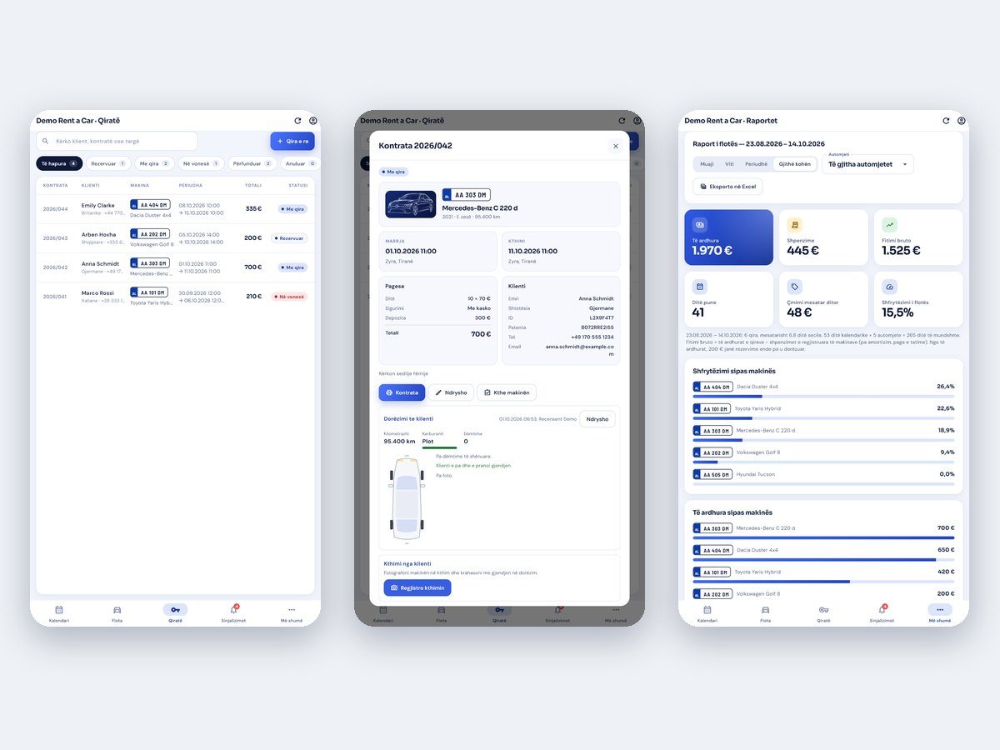

Sheh kush është i lirë dhe kush kthehet nesër, printon kontratën me një klik dhe fotografon makinën në dorëzim e kthim — nga kompjuteri i zyrës ose telefoni në parking.
Krijo llogarinë e kompanisë — 14 ditë provë falas, pa kartë. I njëjti program dhe e njëjta llogari në Windows, Android, iPhone, iPad dhe Mac.

Ndjek punën e një kompanie rent-a-car ashtu siç ndodh: rezervim, dorëzim, kthim, pagesë — dhe dokumentet që nuk duhen harruar.
Një rresht për makinë, 14/30/60 ditë. Klikon një ditë të lirë dhe hap qiranë e re; klikon shiritin dhe hap kontratën.
Dy faqe A4 me firma në secilën, shqip ose anglisht: klienti, çmimi dhe pagesa, gjendja në dorëzim dhe kthim me skicën e dëmtimeve dhe karburantin. Printohet ose ruhet si PDF.
Kilometrazhi, matësi i karburantit, dëmtimet në skemën e makinës dhe fotot nga telefoni. Në kthim del krahasimi: km, karburant, dëmtime të reja, vonesa.
TPL, kasko, kolaudimi, taksa vjetore dhe leja e qarkullimit — njoftim 30 ditë përpara (afati ndryshohet). Edhe servisi sipas kilometrave.
Vaj, goma, frena, servis… për çdo makinë. Raporte sipas muajit, automjetit, klientit dhe shtetësisë; fitimi bruto; eksport në Excel.
Pronari krijon llogari për punonjësit. I njëjti program në kompjuter dhe telefon, të dhënat sinkronizohen në çast.




I njëjti program dhe e njëjta llogari në të gjitha pajisjet.
Windows: nëse del «Windows protected your PC», kliko More info → Run anyway (programi ende s'ka certifikatë nënshkrimi; instaluesi nuk kërkon administrator). Android: shkarkojeni nga Google Play; iPhone, iPad dhe Mac: nga App Store — përditësohen vetë.
Këtu në faqe (ose në programin për Windows/Android): emri i kompanisë, emaili dhe një fjalëkalim — 14 ditë provë falas.
Në kompjuterin e zyrës dhe në telefonin që del në parking, me të njëjtin email. Stafin e shton nga Cilësimet.
Targa, dokumentet, çmimi ditor — dhe kalendari mbushet vetë me qiratë. Kur të përfundojë prova, zgjidhni abonimin.
Një abonim për kompani, pa kufi përdoruesish apo pajisjesh. Paguhet me bankë ose cash; afati zgjatet në llogarinë tuaj.
Falas, pa kartë, me të gjitha funksionet. Të dhënat që futni mbeten kur kaloni në abonim.
Çmimi sipas madhësisë së flotës — na kontaktoni. Kur abonimi përfundon, të dhënat mbeten të lexueshme; shkrimi rikthehet me rinovimin.
Në një bazë të dhënash në cloud (Supabase, serverë në Frankfurt, BE), të ndara për çdo kompani: asnjë kompani nuk sheh të dhënat e tjetrës. Fotot ruhen private dhe hapen vetëm nga llogaritë e kompanisë suaj.
Programit i duhet internet për të lexuar dhe ruajtur të dhënat, që kompjuteri dhe telefoni të shohin të njëjtën gjë në çast. Në parking mjafton interneti i telefonit.
Pa kufi. Pronari krijon llogari për çdo punonjës nga Cilësimet → Stafi dhe mund t'i pezullojë kur ikin nga puna.
Po: raportet eksportohen në Excel, kontratat në PDF, dhe me kërkesë ju japim gjithë bazën tuaj të të dhënave. Të dhënat janë tuajat.
Në ekranin e hyrjes kliko «Harrova fjalëkalimin» dhe ndiq linkun në email, ose na telefono dhe e vendosim ne një fjalëkalim të ri për llogarinë tënde.